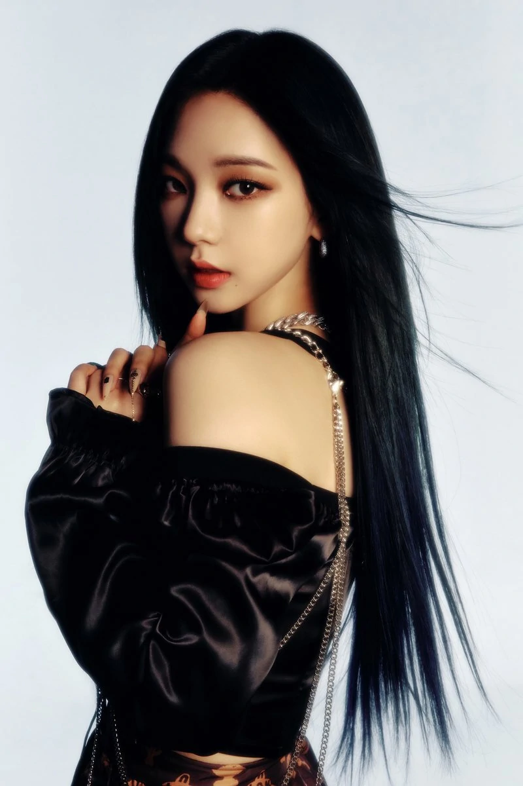

Karina Aespa info
Año de Nacimiento
Fue revelada como la segunda integrante de æspa, el 27 de octubre de 2020. Previamente, había participado en el vídeo musical, prácticas y presentaciones en vivo de la canción "WANT" de su compañero de agencia, Lee Tae Min.
Entra